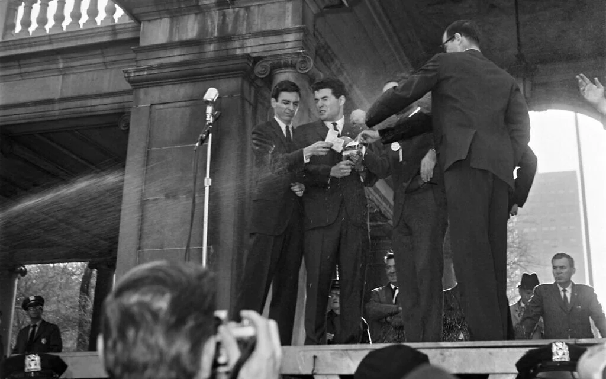
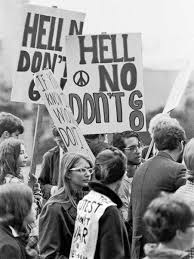

Refusing the call
Planned opposition began with the rise of pacifist organizations whose individual acts developed into movements. The War Resisters League, which was established in 1932, was not very involved in the decades after the war until the increasing involvement of the US government in Vietnam caused growth from around 3,000 members in 1964 to 15,000 by 1972. Led by David Dellinger and David McReynolds, the WRL sponsored a mass action of burning draft cards in New York City in 1964 and participated in organizing Stop the Draft Week in 1967. The Federal government was so worried that WRL became a target in the CIA and IRS agencies because the government believed this movement was something that taught youth how to resist the draft.
However, pacifists were not alone anymore because the anti-war movement of the 1960s brought together students, pacifists, writers, and Vietnam veterans under a single union. In 1967, the opposition movement was able to grow beyond college campuses and transform into a national trend. Public protests, demonstrations, and burning of draft cards became common as well. This movement was a serious political power that had a leadership and a program, and thus the federal government faced a full-scale movement.
.jpg)

The price of protest
The public attention came up during the interaction with the government. This is because on the 4th of May, 1970, the National Guard men shot college student protesters in Kent State University and ended up killing four and injuring many others. The shooting proved the existence of the protest and did nothing in silencing it, and the outrage of the people made it clear that no one believed there was a sense for maintaining the draft. By 1967, more than half of the people realized that the war was unjust, and by 1970 the majority demanded withdrawing the troops.
The loss of legitimacy, not the violence itself, can be seen in this incident. For military service, the concept of the state must be assumed as a basis. Then, the state makes a certain moral claim to the citizens, saying that fighting in war is a fair sacrifice for everyone who is able to take a weapon. Once the part of the population had come to the conclusion that the war is not a just thing to do, any further interactions only strengthen this idea.
.jpg)
The arithmetic of failure
Underneath these public battles was a silent rejection of large proportions. The number of military deserters counted officially by the Congressional Digest in 1974 was about 495,689 during the Vietnam War. This included the 2,705 who left America altogether. There is another estimate that the total number of individuals who have evaded the draft in one way or another reached one million people, most of whom found themselves moving into Canada, of which only 200,000 have been formally prosecuted. The military, which has seen its ranks reduced in size by almost 500,000, cannot hope to see any reforms taking effect due to the fact that so many draft dodgers fled the country.
In order for reforms to be implemented in such a military, the recruitment process has to improve. However, the Selective Service would be able to issue induction letters, but could not guarantee that anyone receiving the letter will honor their call. The lottery of 1969 was intended to help return the intended fairness in the process, but research managed to show how the system remained biased. When the Nixon administration took on the responsibility of officially ending the draft lottery, it legalized a process that the American public accomplished long before that.
.jpg)
Why enforcement collapsed
Civil disobedience was much more than a moral gesture. It was the reason why all-volunteer force was accomplished. Each act of refusal to serve and each escape was a justification that the capacity of the government to inflict military service on its citizens was no longer working. The transformation that occurred in 1973 was nothing but the recognition by the government of a refusal process that had developed over nearly ten years. The draft system did not disappear through any choice made by politicians. It collapsed because citizens refused to be forced to do anything different from their will.